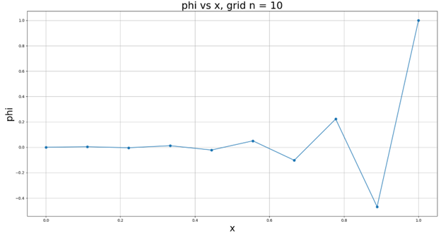
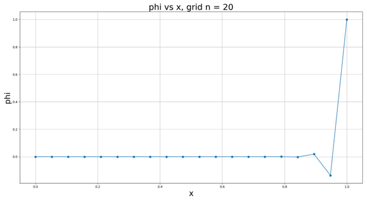
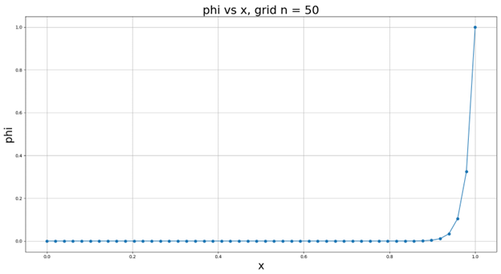
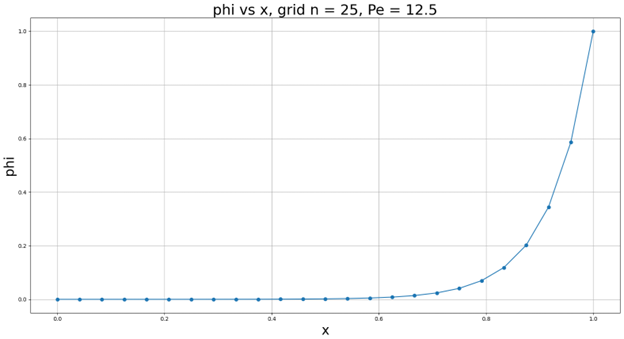
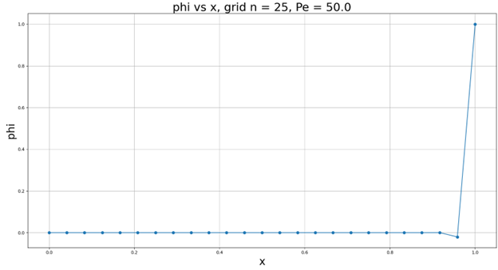
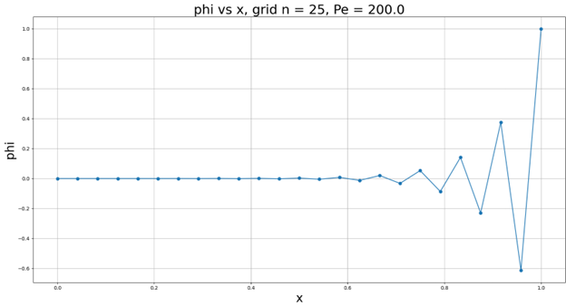
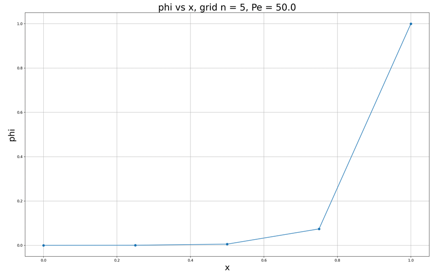
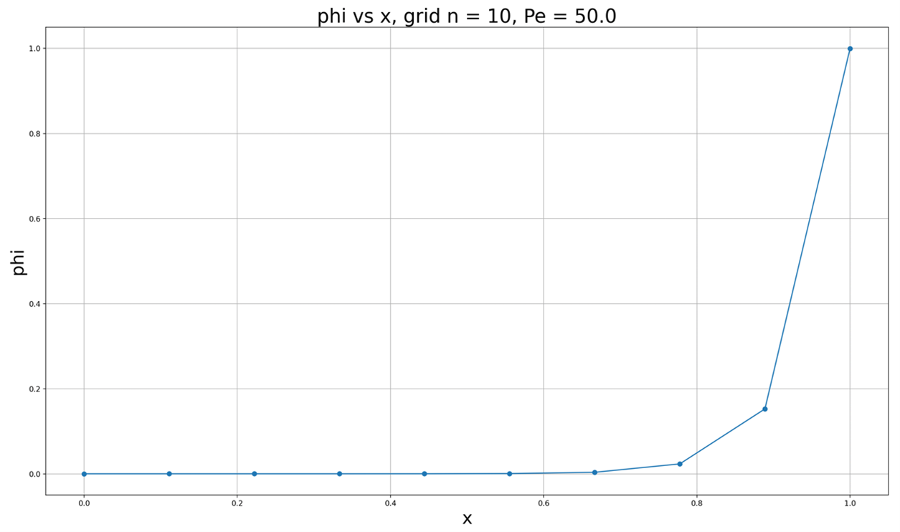
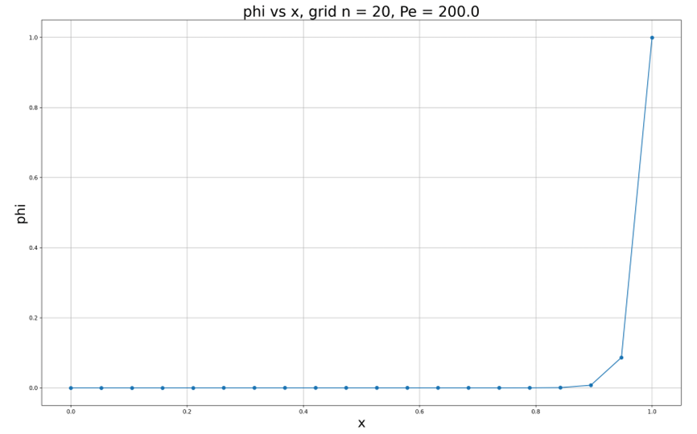

This is the discretization of the 1D steady convection-conduction problem.
The purpose of this is to illustrate how grid size, discretization method, and Peclet Number affect the model. The Peclet Number, Pe, is described as a ratio of advection/convection transport rate over diffusion transport rate. As Pe approaches 0, the flow is dominated by diffusion and convection can be neglected. As Pe approaches infinity, the flow is dominated by convection and diffusion can be neglected, meaning the flow behavior downstream is also neglected.
Below, each figure shows a plot of a transport value with Pe = 50 and varynig grid sizes. From figure 1, we can see that a coarse grid gives us oscillations, but in the next 2 figures, we see those oscillations slowly disappear, which tells us that if we refine the grid, these oscillations will lessen and eventually disappear.



When we keep the grid size constant and vary the Peclet Number, we can see its effects on the oscillations. At a low Pe, where convection has less impact on the flow, we no oscillations, but as we increase Pe, we start seeing more oscillations as convection plays a stronger role.



The reason we see those oscillations at a higher Pe is because we discretized the governing equation using central difference. This takes into account the downstream velocity, which, if the flow is in one direction, should not effect the flow upstream. If we use backward difference for the convection term, we can see that the oscillations are completely gone even with an extremely coarse grid. This shows how important the discretization method is when modeling a problem. When the convection is strong, we often choose something like the upwind difference scheme, which chooses the velocity in the upwind direction.


